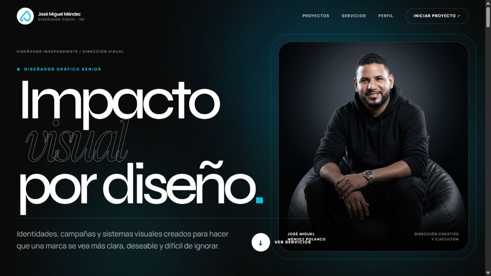

SaaS Full-Stack · IA
Kingdom Studio
Plataforma SaaS que genera, revisa, aprueba, programa y publica contenido editorial con IA, con panel de control y analíticas. FastAPI, Next.js, Supabase.
Ver Caso de EstudioExplora SaaS y aplicaciones, plataformas full-stack, e-commerce, sistemas, landing pages, sitios corporativos y automatizaciones con IA.
Plataforma SaaS que genera, revisa, aprueba, programa y publica contenido editorial con IA, con panel de control y analíticas. FastAPI, Next.js, Supabase.
Ver Caso de Estudio
Sistema multi-tenant para que una iglesia organice sus programas de servicio con seguridad real entre iglesias: asignación automática de roles, RBAC y generación de PDF. Node.js, TypeScript, MongoDB.
Ver Caso de Estudio
Plataforma de cobros y gestión para colegios: mensualidades, morosidad, inscripciones y comunicados por WhatsApp. React, Vite, Tailwind CSS 4.
Ver Caso de Estudio
E-commerce y gestión de ventas con infraestructura Meta Business Suite: activos conectados, cuenta publicitaria, píxel y catálogo de productos.
Ver Caso de Estudio
Plataforma de concierge con catálogo de experiencias, solicitudes, pagos mediante Stripe y panel administrativo con roles.
Ver Caso de Estudio
Automatización comercial propia con cuatro agentes especializados, memoria por cliente, atribución de campañas y transferencia segura a atención humana.
Ver Caso de Estudio





Ejercicios técnicos y experimentos — no son proyectos de cliente, pero muestran cómo aprendo y practico.


Cuéntame qué necesitas y te respondo en menos de 24 horas.